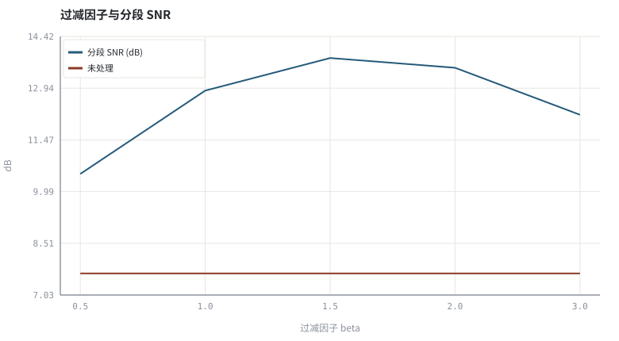
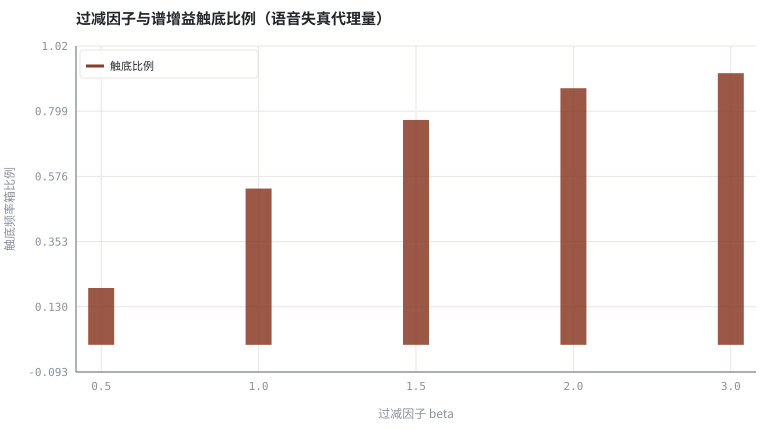

第 12 章谱减、过减因子与音乐噪声
从「减去噪声功率谱」这一行公式出发，把 ANS 的经典基线及其副作用讲透。
本章位置：第 08 章 · VAD 与噪声功率谱估计（MCRA 思路） 解决「噪声有多大」，本章解决「知道了以后怎么减」；第 13 章 · Wiener 滤波、先验 SNR 与 MMSE-STSA 把同一增益换成有统计最优解释的 Wiener 形式。
谱减是对 STFT 矩阵做逐元素 clamp。每个频率箱是一个独立的小控制器，控制器之间不通信，于是才会出现孤立的谱洞。
- 能从加性噪声模型推导功率谱减与幅度谱减的增益式。
- 能说明过减因子、谱下限与音乐噪声三者的定量关系。
- 能实现逐帧逐频率箱的谱减器并测量分段 SNR。
- 能解释为什么「指标变好」不等于「听感变好」。
§知识点地图
每个知识点都配了 1～2 个扩展学习链接；本章完整资源清单见 扩展学习。
| # | 知识点 | 扩展学习 | 状态 |
|---|---|---|---|
| 1 | 加性噪声模型 | ffmpeg afftdn ↗ · Microsoft DNS Challenge ↗ | 正文已覆盖 |
| 2 | 功率谱减 | Spectral subtraction ↗ · ffmpeg afftdn ↗ | 正文已覆盖 |
| 3 | 幅度谱减 | Spectral subtraction ↗ · ffmpeg afftdn ↗ | 正文已覆盖 |
| 4 | 过减因子 | Spectral subtraction ↗ · ffmpeg afftdn ↗ | 正文已覆盖 |
| 5 | 谱下限与谱底 | Spectral subtraction ↗ · ffmpeg afftdn ↗ | 正文已覆盖 |
| 6 | 音乐噪声 | ffmpeg afftdn ↗ · Microsoft DNS Challenge ↗ | 正文已覆盖 |
| 7 | 噪声功率谱估计 | ffmpeg afftdn ↗ · Microsoft DNS Challenge ↗ | 正文已覆盖 |
| 8 | 分段 SNR 权衡 | Spectral subtraction ↗ · ffmpeg afftdn ↗ | 正文已覆盖 |
§12.1一行公式，一个增益矩阵
Y[t,k] = S[t,k] + N[t,k] → G[t,k] = max(G_floor, 1 − β·P̂_n / |Y[t,k]|²)
把 第 02 章 · 采样、量化与时频表示：从 PCM 到 STFT 的 STFT 矩阵看成二维表：行是频率箱 k，列是帧 t。谱减的全部工作就是给每个格子算一个 0 ≤ G ≤ 1，再令 Ŝ = G·Y。相位保持不变——既低延迟低算力，也是 第 22 章 · 复数域与相位：DCCRN、深度滤波与时域模型 要讨论的局限。
| 变体 | 增益式 | 特点 |
|---|---|---|
| 功率谱减 | G = max(G_floor, 1 − β·P̂_n/|Y|²) | 推导最自然，残余起伏大 |
| 幅度谱减 | G = max(G_floor, 1 − β·√P̂_n/|Y|) | 对强噪声更温和，仍有孤立谱峰 |
| Wiener 型 | G = ξ/(1+ξ)，ξ 为先验 SNR | 见 第 13 章 · Wiener 滤波、先验 SNR 与 MMSE-STSA，增益有概率解释 |
§12.2音乐噪声：被过度抑制留下的孤立谱峰
噪声是随机的：某帧某箱恰好噪声很小，增益就被算得很高；相邻箱却可能被压到下限。这种时频上零星闪现的窄带残响听起来像水滴，称为音乐噪声。缓解手段有三：增大过减因子 β、抬高谱下限 G_floor、对增益做时频平滑。
β增大：残余噪声下降，但语音高频一起被削，可懂度变差。G_floor增大：谱空洞变少、听感平稳，但降噪量下降。- 增益平滑：抹掉孤立深陷，代价是引入时域拖尾。
实验统计「增益被压到下限的频率箱比例」作为语音失真与音乐噪声风险的粗略代理量。它不替代主观听测，但能量化 β 与 G_floor 这一对拉扯的旋钮：降噪越狠，触底箱越多。
§Python 实验
实验 12-1 · 过减因子扫描：分段 SNR 与音乐噪声的拉扯
#!/usr/bin/env python3
# -*- coding: utf-8 -*-
"""在合成带噪语音上扫描过减因子，测量分段 SNR 与孤立谱洞数量。
全部语音 / 噪声 / 房间冲激响应均为代码合成信号，仅用于教学演示机制与量级。
"""
from __future__ import annotations
import math
import pathlib
import random
import statistics
import sys
import time
_here = pathlib.Path(__file__).resolve()
for _p in _here.parents:
if (_p / "tools" / "dsp.py").exists():
sys.path.insert(0, str(_p / "tools"))
break
from dsp import (SAMPLE_RATE, fft, hann, stft, istft, magnitude_db, spectrum,
white_noise, tone, chirp, synthetic_speech, rir, convolve,
fft_convolve, delay, clip, normalize_peak, rms, rolling_rms,
smooth, db, energy_db, snr_db, erle_db, seg_snr_db,
scale_align, si_sdr_db, lufs_approx,
write_wav, read_wav, wav_info)
from chart import Chart, heatmap, BLUE, RED, GREEN, AMBER
FIG = _here.parents[1] / "fig"
AUDIO = _here.parents[1] / "audio"
FIG.mkdir(exist_ok=True)
AUDIO.mkdir(exist_ok=True)
random.seed(7)
# ---- 参数区 ----
N = 8000
N_FFT, HOP = 256, 128
NOISE_AMP = 0.035
FACTORS = (0.5, 1.0, 1.5, 2.0, 3.0)
FLOOR = 0.15
# ---- 计算与作图 ----
rng = random.Random(7)
clean = synthetic_speech(rng, N)
noise = white_noise(rng, N, NOISE_AMP)
noisy = [clean[i] + noise[i] for i in range(N)]
nf = stft(noise, N_FFT, HOP)[:8]
nmag = [sum(math.hypot(re[k], im[k]) for re, im in nf) / len(nf) for k in range(N_FFT)]
def enhance(sub, floor):
frames = stft(noisy, N_FFT, HOP)
floored = 0
for re, im in frames:
gains = []
for k in range(N_FFT):
mag = math.hypot(re[k], im[k])
g = max(floor, 1.0 - sub * nmag[k] / (mag + 1e-9))
gains.append(g)
re[k] *= g
im[k] *= g
floored += sum(1 for v in gains if v <= floor + 1e-9)
return istft(frames, N_FFT, HOP, N), floored / max(1, len(frames) * N_FFT)
scores, clipped = [], []
for f in FACTORS:
out, h = enhance(f, FLOOR)
scores.append(seg_snr_db(clean, scale_align(out, clean)))
clipped.append(h)
best = scores.index(max(scores))
out_best, _ = enhance(FACTORS[best], FLOOR)
c = Chart(FIG / "12-subtraction.svg", "过减因子与分段 SNR", xlabel="过减因子 beta", ylabel="dB",
xticks=[(i, "%.1f" % f) for i, f in enumerate(FACTORS)])
c.line(range(len(FACTORS)), scores, BLUE, label="分段 SNR (dB)")
c.line(range(len(FACTORS)), [seg_snr_db(clean, noisy)] * len(FACTORS), RED, label="未处理")
print("SNR图:", c.save())
b = Chart(FIG / "12-distortion.svg", "过减因子与谱增益触底比例（语音失真代理量）",
xlabel="过减因子 beta", ylabel="触底频率箱比例",
xticks=[(i, "%.1f" % f) for i, f in enumerate(FACTORS)])
b.bars(range(len(FACTORS)), clipped, RED, label="触底比例")
print("失真图:", b.save())
write_wav(AUDIO / "12-noisy.wav", normalize_peak(noisy))
write_wav(AUDIO / "12-enhanced.wav", normalize_peak(out_best))
print("segSNR 未处理=%.2f | 谱减: " % seg_snr_db(clean, noisy) +
" ".join("b=%.1f->%.2f" % (f, s) for f, s in zip(FACTORS, scores)))
print("触底比例: " + " ".join("b=%.1f->%.3f" % (f, c) for f, c in zip(FACTORS, clipped)))
print("最佳 beta=%.1f | SAMPLE_RATE=%d N_FFT=%d" % (FACTORS[best], SAMPLE_RATE, N_FFT))操作：对照两条曲线：找出 SNR 最高的因子，再看它对应的触底比例；试听两个 WAV。 预期与判读：分段 SNR 随 β 先升后降，而谱增益触底比例单调上升——降噪越狠，被压到下限的频率箱越多，语音高频与清音一起被削。最优客观分数与最舒适听感通常不是同一个 β，这就是主观评测不可省的原因。
改参数看趋势：把 FLOOR 从 0.15 改到 0.35，触底比例的分母不变但失真减轻，降噪量也会下降。 文件位置：part2/12-spectral-subtraction/code/12-spectral-subtraction.py


12-noisy.wav
带噪输入：均匀白噪声（16 kHz / 16-bit 单声道，代码合成信号，不是真实录音）
12-enhanced.wav
谱减输出：注意残留的窄带起伏（16 kHz / 16-bit 单声道，代码合成信号，不是真实录音）
代码块右上角可一键复制；仓库里的 code/*.py 由 tools/extract_code.py 从这些代码块自动抽取。脚本只用标准库、固定 random.seed(7)，运行后写出 fig/*.svg 与 audio/*.wav；批量运行用 ./tools/run_python.sh。
§可选真机命令片段
以下命令不参与批量运行，需要本机自行安装对应工具。滤镜是否可用取决于本机 ffmpeg 版本与编译选项，请先用 ffmpeg -filters / ffmpeg -version 自查，并以 https://ffmpeg.org/ffmpeg-filters.html 与各自官方文档为准；本书不假定任何特定版本具备某项能力。
用 ffmpeg afftdn 做一次离线对照
ffmpeg -hide_banner -i noisy.wav -af afftdn=nt=w:om=o denoised.wav说明：afftdn 是 ffmpeg 文档中基于 FFT 的自适应降噪滤镜；参数与可用性以本机 `ffmpeg -h filter=afftdn` 与 https://ffmpeg.org/ffmpeg-filters.html 为准，本书不假定任何特定版本具备该滤镜。
§本章参考资料
按本章知识点挑选的精读资料；更多检索入口见 扩展学习。
RNNoise 论文（arXiv 1709.08243） ↗
论文A Hybrid DSP/Deep Learning Approach to Real-Time Full-Band Speech Enhancement
推荐理由：混合 DSP/深度学习如何处理残留噪声
§常见误区
- 把噪声功率谱当常数，非平稳噪声下越减越差。
- 只报 segSNR，忽略音乐噪声与语音失真。
- 增益下限设为 0，制造深谱洞与明显水滴声。
- 谱减后不做 WOLA 归一化，边界出现爆音。
§习题与思考
- 推导功率谱减与幅度谱减的增益式，说明二者对强噪声的差异。
- 解释为什么增大 G_floor 能减少音乐噪声却降低降噪量。
- 设计一个同时报降噪量与语音失真的双指标评测表。
§扩展学习
RNNoise 论文（arXiv 1709.08243） ↗
论文A Hybrid DSP/Deep Learning Approach to Real-Time Full-Band Speech Enhancement
继续检索
- Google Scholar：spectral subtraction musical noise denoising ↗
- arXiv：spectral subtraction musical noise denoising ↗
- GitHub：spectral subtraction musical noise denoising ↗
全书链接总表见 FFmpeg Filters 文档 ↗ 与 附录 A.7；滤镜是否可用请以本机 ffmpeg -filters 为准。
§延伸阅读与内链
- 第 13 章 · Wiener 滤波、先验 SNR 与 MMSE-STSA Wiener / MMSE；第 23 章 · 神经噪声抑制：从 RNNoise 到 DNS Challenge 神经噪声抑制；第 19 章 · 时频掩码：IBM / IRM / CRM 与监督学习形式化 时频掩码视角。